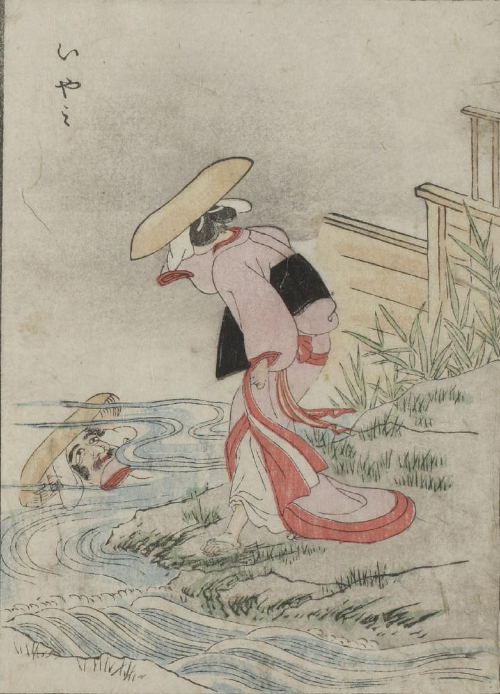

川；カワ，姿見；スガタミ

緋色の着物を着た女が、自らの顔を川面に映す後姿が描かれている。しかし、水面には、ひげを生やした男の顔が映っている。
出典：親書誌：U426_nichibunken_0051：怪物画本；カイブツエホン／日付：2006／資源識別子：U426_nichibunken_0051_0010_0000
Copyright (c)2010- International Research Center for Japanese Studies, Kyoto, Japan. All rights reserved.